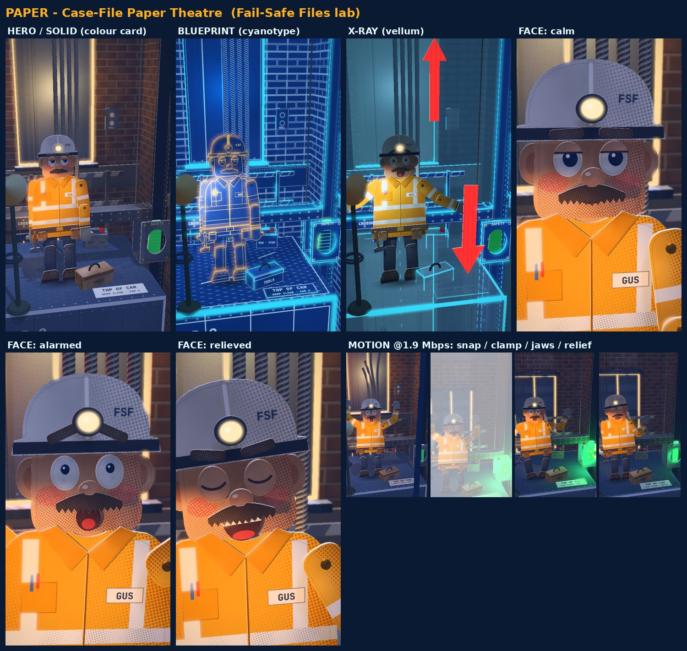

<title>Paper Case-File Proposal</title>
<meta name="claude:viewport-fit-sides" content="cover">
<link rel="preconnect" href="https://fonts.googleapis.com">
<link rel="stylesheet" href="https://fonts.googleapis.com/css2?family=Barlow+Condensed:wght@600;700&family=IBM+Plex+Sans:wght@400;500;600&family=IBM+Plex+Mono:wght@500&display=swap">
<style>
  /* Layout: one reading column like a case file, tables scroll inside their own box. Single deliberate dark theme in channel colours. */
  :root {
    --navy: #0B1A33; --panel: #11284b; --line: rgba(53,215,255,.26); --grid: rgba(53,215,255,.06);
    --cyan: #35D7FF; --green: #39FF88; --amber: #FFB020; --red: #FF5A5A; --text: #eaf3fb; --muted: #9fb4c9;
    --display: "Barlow Condensed", "Arial Narrow", sans-serif;
    --body: "IBM Plex Sans", -apple-system, "Segoe UI", Roboto, sans-serif;
    --mono: "IBM Plex Mono", ui-monospace, Menlo, monospace;
    color-scheme: dark;
  }
  * { box-sizing: border-box; }
  body { background-color: var(--navy); color: var(--text); font: 16px/1.55 var(--body);
    background-image: linear-gradient(var(--grid) 1px, transparent 1px), linear-gradient(90deg, var(--grid) 1px, transparent 1px); background-size: 24px 24px; }
  main { max-width: 760px; margin: 0 auto; padding-block: 20px 56px; padding-left: max(16px, env(safe-area-inset-left, 0px)); padding-right: max(16px, env(safe-area-inset-right, 0px)); display: grid; gap: 30px; }
  section { display: grid; gap: 12px; min-width: 0; }
  .eyebrow { font: 500 12px/1 var(--mono); letter-spacing: .12em; color: var(--cyan); text-transform: uppercase; }
  h1 { font: 700 36px/1.02 var(--display); margin: 6px 0 0; text-wrap: balance; }
  h2 { font: 700 24px/1.1 var(--display); margin: 0; text-transform: uppercase; letter-spacing: .03em; color: var(--cyan); text-wrap: balance; }
  h3 { font: 700 19px/1.15 var(--display); margin: 4px 0 0; letter-spacing: .02em; }
  p, li { max-width: 65ch; margin: 0; }
  ul, ol { margin: 0; padding-left: 20px; display: grid; gap: 6px; }
  .lede { color: var(--muted); }
  .note { padding: 14px 16px; border: 1px solid var(--line); border-left: 4px solid var(--amber); background: var(--panel); border-radius: 8px; display: grid; gap: 8px; }
  .tbl { overflow-x: auto; border: 1px solid var(--line); border-radius: 8px; }
  table { border-collapse: collapse; width: 100%; min-width: 560px; font-size: 14px; font-variant-numeric: tabular-nums; }
  th, td { text-align: left; padding: 8px 10px; border-bottom: 1px solid var(--line); vertical-align: top; }
  tr:last-child td { border-bottom: 0; }
  th { font: 500 11px/1.2 var(--mono); color: var(--muted); text-transform: uppercase; letter-spacing: .06em; background: rgba(53,215,255,.05); }
  td.n { font-family: var(--mono); white-space: nowrap; }
  .hi { color: var(--green); } .md { color: var(--amber); } .lo { color: var(--muted); }
  .opts { display: grid; gap: 12px; }
  .opt { padding: 14px 16px; border: 1px solid var(--line); border-radius: 8px; background: var(--panel); display: grid; gap: 8px; min-width: 0; }
  .opt.rec { border-color: var(--green); }
  .tag { font: 500 11px/1 var(--mono); padding: 5px 8px; border-radius: 999px; border: 1px solid var(--green); color: var(--green); justify-self: start; letter-spacing: .05em; text-transform: uppercase; }
  .chunks { display: flex; flex-wrap: wrap; gap: 8px; }
  .chunk { font: 700 18px/1 var(--body); padding: 10px 12px; border-radius: 6px; background: #000; color: #fff; text-shadow: 0 2px 6px rgba(0,0,0,.6); }
  .chunk em { font-style: normal; color: var(--amber); }
  figure { margin: 0; display: grid; gap: 6px; }
  figure img { width: 100%; height: auto; border-radius: 6px; border: 1px solid var(--line); display: block; }
  figcaption { font: 500 12px/1.4 var(--mono); color: var(--muted); }
  .ask { padding: 16px; background: var(--panel); border: 1px solid var(--green); border-radius: 8px; display: grid; gap: 10px; }
  .ask ol { gap: 10px; }
  code { font: 500 13px var(--mono); color: var(--cyan); }
</style>

<main>
  <header>
    <div class="eyebrow">Stage 1–2 · Proposal for approval · nothing changed yet</div>
    <h1>Paper Case-File Proposal</h1>
  </header>

  <div class="note">
    <p><b>Starting point.</b> The Paper Case-File experiment is a 3-second test: Gus, a cut-out paper puppet, in a card-and-foil elevator shaft. Reviewers liked the faces and the blueprint, and found it juvenile and Playmobil-like. The full-frame white flash at the clamp erased the payoff. The 5.1/10 ten-second test was built in the hybrid look, so its grey image and particle-board walls are not Paper's problems. The lesson still applies here.</p>
    <p>Everything stays as it is. The other concepts and the hybrid are archived references. Their engine parts are reused only where they help Paper: exact brand colour, local flashes, the gear and rope-snap rigs, the camera timeline, the 3D character rig and the measuring tool.</p>
  </div>

  <figure><figcaption>Current Paper Case-File board (unchanged)</figcaption></figure>

  <section>
    <h2>1 · Recommended improvements</h2>
    <h3>Light the paper like a real miniature set</h3>
    <p>A warm work-lamp should rake across the paper so fibres, cut edges and layer gaps cast real shadows. Shadows go deep navy, never grey or black, with one bright pool where the story is. This is the cheapest and biggest jump in "premium".</p>
    <h3>Paper you can believe at macro scale</h3>
    <p>Each role gets its own stock:</p>
    <ul>
      <li>rag board for walls</li>
      <li>kraft for structure</li>
      <li>metallic foil board for steel</li>
      <li>vellum for X-ray</li>
      <li>cyanotype for blueprint</li>
    </ul>
    <p>Every piece gets visible cut-edge thickness with a lighter core, crisp score-and-fold creases, slight warps, and soft contact shadows between layers. The fine noise that read as particle board goes. Halftone print stays only at a dot size that survives phone compression.</p>
    <h3>A signature transition: the pop-up</h3>
    <p>Scenes unfold like a pop-up book, and the blueprint sheet peels away to reveal the colour print underneath. This replaces the generic print sweep and white flashes, and no other channel owns it.</p>
    <h3>Mechanism as a paper hero</h3>
    <p>The brake jaws become layered foil-board wedges with embossed serrations, printed in safety green, biting a folded steel-foil rail. The glow lights only the jaws, never the whole frame. Close-ups are side-on and framed centre-right, so the meter edge stays free.</p>
    <h3>Motion and physics</h3>
    <p>Rope as paper cord that whips, then falls and drapes under gravity. Puppet-quality acting with weight shifts, anticipation and settle. Held compositions with slow push-ins, using the measured camera rules we already have.</p>
  </section>

  <section>
    <h2>2 · Reference research</h2>
    <p><b>Observed so far (vidIQ data only, 20 credits):</b></p>
    <ul>
      <li><b>Ricks Clips:</b> the top Shorts are 40–66 s explainers with 6–33M views, in a lane close to ours ("This Shape Saved Roller Coasters", "Why Perfect Railroads Don't Work", "Why Sailors Carried Storm Oil").</li>
      <li><b>Segment Zero:</b> 51–64 s history and military explainers.</li>
      <li><b>Wobbly Business:</b> 41–85 s business explainers.</li>
      <li><b>Read With Jessica:</b> the handle resolves to a channel titled "Jessica Jokes", with short skits plus recent 1-minute history stories.</li>
    </ul>
    <p><b>Not yet done:</b> no video has been watched or visually analysed. vidIQ returns a written scene-by-scene analysis, not frames, so we can't measure their footage. The free thumbnail viewer was blocked by this session's safety check. Recommendations from the references come after the research you approve below.</p>
  </section>

  <section>
    <h2>3 · Research plan and credits</h2>
    <p class="lede">Balance 1,955 credits (renews Dec 9). Every watch uses one craft-focused prompt: scene construction, depth, camera and lens, lighting, materials, character acting, how diagrams sit in the scene, transitions, subtitles.</p>
    <div class="tbl"><table>
      <thead><tr><th>Item</th><th>Videos</th><th>Credits</th></tr></thead>
      <tbody>
        <tr><td>Both tutorials, actual video analysis (25 each)</td><td>2</td><td class="n">50</td></tr>
        <tr><td>Ricks Clips: Railroads, Roller Coasters, Ancient Jar, Storm Oil, Pink Prison Cell (10 each)</td><td>5</td><td class="n">50</td></tr>
        <tr><td>Segment Zero: Jar/Nobel Prizes, Invisible Plane</td><td>2</td><td class="n">20</td></tr>
        <tr><td>Wobbly Business: How Money Gets Cleaned</td><td>1</td><td class="n">10</td></tr>
        <tr><td>Read With Jessica: Einstein's Math Lesson (after you confirm the channel)</td><td>1</td><td class="n">10</td></tr>
        <tr><td><b>Full plan</b></td><td>11</td><td class="n"><b>140</b></td></tr>
        <tr><td>Lean option: tutorials + 3 Ricks Clips + 1 from each other channel</td><td>8</td><td class="n">110</td></tr>
      </tbody>
    </table></div>
    <p class="lede">No transcripts (the scripts are locked) and no repeat watches. Findings go in one doc, split into four parts: observations, principles, Paper adaptations, rejected ideas.</p>
  </section>

  <section>
    <h2>4 · Character strategy (your decision)</h2>
    <div class="opts">
      <div class="opt">
        <h3>A · Improve Gus</h3>
        <p><b>For:</b> the most "paper" of all. Faces built from layered cut pieces already read well. Cheap to render.</p>
        <p><b>Against:</b> a flat card can only turn about 35°. Full turns need separate drawn views per angle, roughly 3× the art per character. His 4-head proportions and mitten hands read juvenile and need a redesign. There's no leg system, so feet don't plant and there's no weight.</p>
      </div>
      <div class="opt">
        <h3>B · Re-skin Rafa and Noor in paper</h3>
        <p><b>For:</b> full 3D turns, planted feet, 12 expressions and a builder for new characters. All of it already exists.</p>
        <p><b>Against:</b> a paper texture on a smooth body still reads as a game character. This option fixes the surface, not the construction.</p>
      </div>
      <div class="opt rec">
        <span class="tag">Recommended</span>
        <h3>C · Rafa and Noor, built as folded card</h3>
        <p>Keep their skeleton, rig, foot planting and character builder. Rebuild the bodies as scored, folded card panels with visible creases and cut-edge thickness. Faces become Gus-style layered cut-paper pieces mounted on the 3D head, so each expression is a swap or slide of real paper parts. Gus's design DNA carries forward, and Gus stays as reference or a cameo.</p>
        <p><b>Against:</b> the most engineering (a new geometry layer on the rig). Prove it first with one turnaround and one expression sheet before committing.</p>
      </div>
    </div>
  </section>

  <section>
    <h2>5 · Integrated visual elements</h2>
    <ul>
      <li><b>Danger meter:</b> a die-cut card gauge on the left edge, built in 3D in front of the lens. It's lit by the scene's lamps, slightly out of focus, with a paper slider that drops to green on the clamp frame.</li>
      <li><b>Labels:</b> printed paper tags pinned or tied to the actual part in BLUEPRINT. Callouts are drawn onto the cyanotype sheet itself, in perspective.</li>
      <li><b>Force arrows:</b> red cut-paper arrows standing in the scene where the force acts, so they cast shadows and get occluded.</li>
      <li><b>History tag:</b> an archive photo-card slides into the scene and a real rubber stamp hits it, leaving ink on the card.</li>
      <li><b>Exception:</b> when 3D hurts readability (tiny numbers, fast reads), use a 2.5D card that faces the camera, still lit and shadowed by the scene.</li>
    </ul>
  </section>

  <section>
    <h2>6 · Expressive subtitles</h2>
    <p>One reusable Remotion component, driven by your finalized script plus the narration's word timings, so spelling and punctuation come from your script and never from speech recognition.</p>
    <div class="chunks" aria-label="Example subtitle sequence"><span class="chunk">There's</span><span class="chunk">almost never</span><span class="chunk">just one</span><span class="chunk"><em>cable.</em></span></div>
    <ul>
      <li><b>Chunks:</b> 1–3 words each, split at punctuation and natural speech groups. Never a lone article. Capitalization and punctuation exactly as written.</li>
      <li><b>Timing:</b> each chunk appears on its first word (±1 frame) and holds until the next. A chunk shorter than about 8 frames merges with its neighbour.</li>
      <li><b>Emphasis:</b> at most one emphasized chunk per sentence. It gets a slightly larger size and weight, a short "stamp" settle, and our colour code: amber for the person, red for danger, green for the fail-safe. Everything else gets a quiet 3-frame rise and fade, with no bouncing.</li>
      <li><b>Typeface:</b> the CapCut drafts used Gotham, which isn't free to use in our renderer. I'd test three free alternatives at phone size: Montserrat ExtraBold (closest to Gotham), Archivo Black and Barlow Semi-Condensed Bold.</li>
      <li><b>Style:</b> white with a soft dark shadow, like your draft, plus an optional faint die-cut paper backing.</li>
      <li><b>Placement:</b> a band around y 1250–1450, above YouTube's bottom controls. It shifts automatically per shot when the mechanism sits there.</li>
      <li><b>QA:</b> an automatic check for word count, sync, overlaps, contrast and collisions with key action. You approve the chunk list as text before any render.</li>
    </ul>
  </section>

  <section>
    <h2>7 · Ranked improvements</h2>
    <div class="tbl"><table>
      <thead><tr><th>#</th><th>Improvement</th><th>Impact</th><th>Difficulty</th><th>Cost</th></tr></thead>
      <tbody>
        <tr><td class="n">1</td><td>Lighting and value design on paper</td><td class="hi">High</td><td class="hi">Low–Med</td><td class="hi">Low</td></tr>
        <tr><td class="n">2</td><td>Paper material fidelity (stocks, edges, creases, layer shadows)</td><td class="hi">High</td><td class="md">Med</td><td class="hi">Low</td></tr>
        <tr><td class="n">3</td><td>Mechanism as paper hero, local glow only</td><td class="hi">High</td><td class="hi">Low–Med</td><td class="hi">Low</td></tr>
        <tr><td class="n">4</td><td>Expressive subtitle system</td><td class="hi">High</td><td class="md">Med</td><td class="hi">Low</td></tr>
        <tr><td class="n">5</td><td>Characters (your option A, B or C)</td><td class="hi">High</td><td class="lo">High</td><td class="md">Med–High</td></tr>
        <tr><td class="n">6</td><td>Integrated paper graphics (meter, tags, arrows, stamp)</td><td class="md">Med–High</td><td class="md">Med</td><td class="hi">Low</td></tr>
        <tr><td class="n">7</td><td>Pop-up / peel signature transitions</td><td class="md">Med–High</td><td class="md">Med</td><td class="md">Med</td></tr>
        <tr><td class="n">8</td><td>Camera and staging (holds, push-ins, fall camera)</td><td class="md">Med</td><td class="hi">Low</td><td class="hi">Low</td></tr>
        <tr><td class="n">9</td><td>Paper-cord rope physics, debris</td><td class="md">Med</td><td class="md">Med</td><td class="hi">Low</td></tr>
        <tr><td class="n">10</td><td>Full-resolution and compression QA pass</td><td class="md">Med</td><td class="hi">Low</td><td class="md">Med (renders)</td></tr>
      </tbody>
    </table></div>
    <p class="lede">Proposed order: one look-dev test per item (1–3 together, then 4, then a character proof for 5), compared at phone size and full resolution, before anything joins the production system.</p>
    <p class="lede">Usage: every helper agent costs about 78k tokens just to start (measured today), so I'd use a few long-running agents rather than many. Sonnet would do implementation and Opus direction and reviews, with one contact sheet per review round.</p>
  </section>

  <section class="ask">
    <h2>8 · What I need from you</h2>
    <ol>
      <li><b>Scripts:</b> where are the finalized scripts? Your CapCut screenshots show "There's almost never just one cable." Is that the elevator-cable video we're producing? Please send its narration text (and its voice-over, if one exists).</li>
      <li><b>Research credits:</b> full plan (140) or lean (110)? Should I also ask again to use vidIQ's free thumbnail viewer?</li>
      <li><b>Read With Jessica:</b> is "Jessica Jokes" the right channel?</li>
      <li><b>Characters:</b> option A, B or C?</li>
      <li><b>Subtitle font:</b> OK to test free fonts instead of Gotham?</li>
    </ol>
  </section>
</main>
